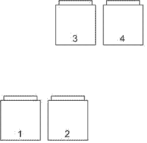
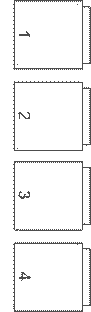

reg.è.chovatele
100747
registracni
cislo hospodarstvi 89691519
kód území
787591
KU Vyklantice parcela
1571
2000/4 2005
1.2.2006
12:00-14:30 odbìr mìli -4°C, jasno
22.3.2006
Stìhování úlù 14:30-16:30 +1°C, zata¾eno, sníh 50 cm
Rozmístìní úlù dosavadní:


Pøemístìní úlù na nové stanovi¹tì:

10.4.2006
Vlo¾ení èistých podlo¾ek, otoèení a výmìna èesnových vlo¾ek, 470g vèel
1.
2.
3.
4.
upraven základ na maringotku 4700x2300
25.4.2006
stìhování maringotky.
2.-4.5.2006
upadlá skøíòka, rozpadlý stùl, ohni¹tì
vagris - vodováha z hadice
sakovák - prohnutý rýè na úzké hluboké díry
4.5.2006 Vèely
1. asi 3 mateèníky, ploduje nepravidelnì
2. zru¹en
3. ploduje
4. ploduje
9.5.2006 kubec nahlá¹eno jedno uhynulé vèelstvo
17.5.2006
pøeháòky 17-23°C v 1/2 práce zaèalo drobnì pr¹et
1.nasazeny medníky na v¹echny
tøi úly, nepravidelný plod, min. jeden mateèník
3.ploduje, trochu ménì ne¾ 4
4.ploduje, nejsilnìj¹í
vo¹tí zásoby 3*24, 9*27, 8*28
mezistìn
22/23.5.2006
1.
3.pøidány mateèníkové misky k ovonìní
4.pøidány mateèníkové misky k ovonìní
1.
3.umístìny mateèníkové misky s larvièkami podle návodu, jsou umístìny pøed
spadlým rámkem v medníku
4.divoèina (plná plodu) ve dnì úlu, celý úl pouze s jedním rámkem
pøemístìn jako 4A, na pùv. místo dán èistý úl a vlo¾eny rámky z
pùvodního.
4A.
POZOR na divoèinu
25.5.2006
http://www.alvik.cz/
31.5.2006 17:30
10°C
1. stále bez matky, nepravidelný plod,
zredukován na jeden nástavek
2.matka ploduje, pouze 3 ks
mateèníkù z 12.
4.asi pøi stìhování divoèiny zahynula
i matka, pøidán jeden mateèník, ostatní, co jsem na¹el - zru¹eny.
4A. v¹e zahynulo
1.6.2006 12:30
10°C
pøeèíslování
1. Pøidán mateèník.
2. odebrány mateèníky, pøidána mezistìna
3. vyjmut 1x mladý plod i se vèelami + 1x zásoby i se vèelami na
vytvoøení oddìlku
4.oddìlek, posazen nad 3. oddìlen sítem, pøidáno medocukrové tìsto
14.6.2006 19:00 24°C
1.mateèník nevylíhnutý
2.pøidány mateèníkové misky k ovonìní
3.mateèník vylíhnutý
4.mateèník vylíhnutý
zasazen bøeè»an okolo dvou stìn boudy
15.6.2006 11:30 28°C
1.
2.umístìny mateèníkové misky s larvièkami podle návodu, 2. pozice v
medníku, pøidán polonástavek nahoru nad medník
3.
4.pøidána mezistìna
tyèe k psímu vínu, zaøíznut, obrou¹en a natøen stùl s lavicemi. hráz.
17.6.2006
11:20 Weather 18°C Precip Past 24 hours 18.30 mm
19./20.6.2006
hl.n.- bene¹ov, dále na kole
Mary
7:30 pøemístìn jeden plást s otevøeným plodem v 2. úlu do medníku
11:30
1.velmi slabé, bez matky?, spojen pøes noviny s 3.
2.velmi silné, odebány plásty na oddìlek
3.pøidán 1. úl
4. oddìlek z 1.6.2006 dán na pozici 6.
6. oddìlek z 1.6.2006
5. nový oddìlek 20.6.2006
29.6.2006
dé¹»,18° -20°C, pouze podle èesna:
2.velmi silné
3.slab¹í
6.¾ádný
5.¾ádný
30.6.2006 7:30 13°C
Precip Past 3 hours 12.8 mm
Precip Past 6 hours 25.5 mm
Precip Past 24 hours 60.9 mm
3.7.2006
Tomá¹ Ja¹a
Pokusný vèelín Skøivánek
p. ©toky
582 53
tel 737 451 563
beeskk@email.cz
SMS:Dobry den, prosim o zaslani 2ks matek-neoplozenych na adresu: Jan
Matuska, Bellusova 1853, 155 00 PRAHA 5. Vcely mam na Vysocine, mohl by
jste mi SMSkou sdelit, kdy by jste mi je mohli poslat? Diky, preji
brzke uzdraveni.
http://cv.jiljiklen.com/
10.7.2006
| 1 |
odebrán 4x
zavíèkovaný plod |
| 2 |
odebrán 4x zavíèkovaný plod |
|
|
|
|
| o1 |
oddìlek 2x plod |
| o2 |
oddìlek 3x plod spojený z minula |
| o3 |
oddìlek 3x plod |
15.7.2006 16:30 22°C polojasno
| 1 |
slab¹í |
| 2 |
silnìj¹í |
|
|
|
|
| o1 |
silnìj¹í |
| o2 |
|
| o3 |
|
matky stále ve klícce, do ka¾dého
oddìlku, pøidáno 1x tmavý plást, ka¾dému asi 1/2kg tìsta
22.7.2006
10.8.2006 17:00 hod.18-20°C oblaèno
| 1 |
plný medník ** |
| 2 |
1/2 medníku |
|
|
|
|
| o1 |
nejslab¹í,
pøidán 1x zavíèkovaný plod z **, Mv,pøidáno tìsto 1kg, loupe¾?, uvidíme
|
| o2 |
silné,Mv,pøidáno
tìsto 1/2kg |
| o3 |
nejsilnìj¹í,
M+,pøidáno tìsto 1/2kg |
14/15.8.2006
dé¹»
vytáèení asi 13kg medu
krmení (4x3kg), mimo úl è.1
17.8.2006
Gabon do v¹ech úlù (do è.1 2x)
krmení è.1 3kg
Vèelstvo rozebereme a do mírnì
roz¹íøených ulièek mezi plodové plásty symetricky ke støedu plodového
tìlesa zavìsíme 2 prou¾ky (napø. do 2. a 5. ulièky). Jen u zvlá¹tì
silných vèelstev, která mají plod ve dvou nástavcích, zavìsíme je¹tì
dal¹í l a¾ 2 prou¾ky. Prou¾ky zavì¹ujeme na háèky, jejich¾ vzor je
pøilo¾en ke ka¾dému balíèku prou¾kù, tak, aby prou¾ek visel volnì mezi
plásty, nedotýkal se plástové plochy a neporu¹il se otvor k zavì¹ení
prou¾ku. Prou¾ky ponecháme ve vèelstvu po dobu dvou period
zavíèkovaného plodu, tj. 24 dní ev. 30 dní je-li pøítomen trubèí plod.
Po této dobì prou¾ky vyjmeme.
23/24.8.2006 19:00 18°C
ráno 10°C, odpoledne 22°C
Krmení vèelstev 5x3kg
mateøídou¹ka
31.8.2006 14:00 16°C
Krmení vèelstev 5x3kg
od¹roubování dr¾ákù ze støechy
4/5.9.2006 14:00 22/30°C
| 1 |
|
| 2 |
1kg bez vody
|
|
|
|
|
| o1 |
1kg bez vody |
| o2 |
|
| o3 |
1kg |
Krmení vèelstev 5x3kg
støecha barva, beton my¹i, stùl
Krmení
Dùle¾ité je sypat cukr do vody( mù¾e
být i studená) , ne opaènì. Naklapne se víèko, otoèí sklenice do misky
, kam vyteèe nìco málo roztoku. Pøípadnì se je¹tì krou¾ivým pohybem
opláchne cukr pøilepený na dnì sklenice.
1,5 l vody , doplnit cukrem (3,5 l
sklenice)
Dobry
den. Na doporuceni obchodnika jsem misto dalsich balonovych krmitek
zkusil
krmitka na okurkove (3-litrove sklenice). Pri nasazeni do ulu jsem vsak
po
chvili (asi 2 minuty) zjistil, ze roztok vy teka prilis rychle. Je
treba mezi
sklenici s 80-otvorovym uzaverem a podlozku jeste neco davat? Zkusil
jsem tenky
hadrik a vysledej je jiz uspokojivejsi. Je to tak ale spravnì?
Dekuji.
Svetlik
Pre
istotu nechavam asi dve hrste nerozmiesaneho krystaloveho cukru. Tento
ciastocne upcha otvory na viecku a spolmali presakovanie roztoku.
Nakoniec
vcely zoberu aj ten nasiaknuty cukoL
S
pozdravom , Maros.
Jednodu¹e:
Ètyølitrovka
se naplní krystalem - HRUBÝM !lJ! Oe málokdy k
sehnáni).Dolije plná studenou vodou, nasadí se krmné víèko. Na horní
louèky se
polo¾í dvì døívka kolmo na rámky od sebe tak, aby na nich pøeklopená
sklenice
spolehlivì stála a vèely zespodu mohly k dirkám. Nasadí se dal¹í
nástavek na
sklenici a víko. Vèely si to ohøejí a za tøi dny je prázdná. Kdo nechce
do vèel,
pou¾ije sítko pod sklenici. Tam je nìkdy problém, ¾e kdy¾ je skleníce
nad víkem,
bez kontaktu se vèelami, musí být ve tmì, nesmi se nechat na svìtle.
Ale stejnì
lépe berou, kdy¾ mají sklenici, uvnitø, jakoby vìdìly ¾e tam ten cukr
je.
Zdraví PP.
Hrubý
cukr není nutný. Krmím normálním krystalem ze samoobsluhy bez problémù.
Dùle¾ité
je sypat cukr do vody (staèí studená) a ne opaènì. Pak oèistím hrdlo od
pøípadných
krystalkù, naklapnu víèko a otoèím sklenici do misky, kam vyteèe nìco
málo
roztoku. Pøípadnì je¹tì krou¾ivým pohybem opláchnu cukr pøilepený na
dnì
sklenice. Pak sklenici (u¾ bez misky) polo¾ím pøimo na rámky a obsah
mísky
vyleju do dal¹í sklenice.
Sklenice
zakryj u dal¹im nástavkem a víkem, do nástavku 39*24 se vejdou a¾ ètyøi
sklenice najednou. Pøi prvním krmení to silnìj¹í vèelstvo vybere do
týdne, dal¹í
dávky u¾ dávám radìji jen po dvou sklenicích.
Jirka
Borik iiri.borikCá2volnv.cz
Pøesnì
tak! Nejprve asi 1,5 litru vody ( ohøívat netøeba) pak doplnit 3,5 I
sklenici
cukrem ( nevadí ani jemná krupice) a pøevrátím a¾ nad otevøeným úlem a
polo¾ím
jednou hranou víèka na dvì boèní louèky polo¾ené kolmo na rámky. Pak
sklenicí
ZAVRTIM a¾ se spláchne cukr i ze dna sklenice a úl zavøu. Je to
perfektní pro
toho, komu nevadí, ¾e není pøi krmení oddìlen od vèel. A díky tomu, ¾e
sklenice
je souèástí prostoru ovládaného vèelami je v¾dy cukr odebrán bezezbytku
( no to
jsem pøehnal, nìkdy zbyde na víèku pøi okraji hrdla nepatrný prstenec
cukru v mno¾ství tak do polévkové
l¾íce - to se vyklepne na horní louèky, nebo opláchne do vody pro
následující vèelstvo).
Pou¾ití krmných ètvereèkù -
møí¾ek pøiná¹í jen
komplikace. Prodávaná
plastová krmítka - dvou prostorové výlisky vy¾adují 0000 ( dodìlej doma
- díky pestrosti rozmìru úlù je tøeba zhotovit dno s prùlezem
ze sololitu, a vnìj¹í stìny v návaznosti na rozmìry nástavku). Navíc se
v nich
dá efektivnì zkrmit pouze cukerný sirup ( ( ohøátím vody rozpu¹tìný
cukr v pomìru
asi 3 kg cukru a 2 litry vody). TEPL YM roztokem krmit je sice dobrý
zpùsob,
jak u¹etøit vèelám práci s ohøátím roztoku na teplotu, která usnadní
¹tìpeni zásob
na jednoduché cukry, ale:
1.
emituje do prostoru více podnìtù pro vznik loupe¾e. A proto¾e asi
neexistuje vèelnice,
kde by v¹echna vèelstva byla ve stejné síle a ve stejné schopnosti
bránit èesno,
je lep¹í o¾elet èást zásob ( 5%? ) a krmit nastudeno, ne¾ pøijít o
vèelstvo ( èást
krmiva vèely spotøebují na jejich ¹tìpení, mírnì se zvý¹í opotøebení
vèel ).
2. je
výhodné pouze v období, kdy vèely u¾ v dobì krmení nevyletují z úlù
co¾ letos
urèitì není a nebude. I kdy¾ - kdo má jistotu, ¾e bude v prùbìhu srpna
je¹tì nìjaká
významná snù¹ka ( napø. v doletu letní výsevy øepky, vøes a pod. ), tak
odlo¾í
krmení a¾ na záøí a pak u¾ bude výhodnìj¹í krmit teplým sirupem. A do
té doby
udr¾ovat vèelstva v plodování tøeba medocukrovým tìstem.
pepa.kala@volny.cz
Pozn.
| Rozmìry dna - vnitøní |
| |
pùvodní |
køemencova |
bøinek |
pylochytové |
smyk do
podmetu |
| dno ¹. |
423 |
420 |
420 |
410 |
418 |
| dno v. |
430 |
455 |
425 |
420 |
|
| podlo¾ka ¹. |
|
|
417 |
406 |
|
| podlo¾ka v. |
|
|
420 |
418 |
|
| zadní otvor |
90 |
85 |
60 |
75 |
60 |
| |
|
|
zabrou¹eno |
zabrou¹eno |
|
Vèelaøská prodejna Praha
Bìlehradská ulice 15
140 00 Praha 4
tel./fax: 2 22563589
tel. 603 486978
otevírací doba PO - PA : 9 a¾ 18 h.
Pøivézt: ¹tafle,
benzín,
ferme¾, box337*240,
vruty 4-5/50-60
¹punt dozadu, èesno, støí¹ky
1590*200 2ks stùl
Chata: kytky, sekáè, rozbru¹ka,
hettich posuvníky do tavidla 510 mm
vysunout